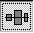

Aligning and placing elements
Flash is mostly placing elements. It's therefore quite important to know how to do this.
Align:
Vertical Align: Selecting several symbols, and choosing the

will align the selected
symbols on a straight line, with the centers placed on this line.
If you have "Align to page" checked, they will align horizontally
on a line placed in the middle of the Flash movie. It's called "Vertical
Align", because it moves symbols vertically relating to eachother.
Same options go for the "Horizontal Align", except it moves symbols horizontally relating to eachother.
Space Evenly: Selecting several symbols (three or more), and choosing the
Will adjust the amount of free space between the selected symbols, either horizontally, or vertically relating to eachothers. This selected button for instance, will adjust the centers of the symbols, so that third symbol will place itself in the exact middle, of the the space between the center of the topmost symbol and the bottommost symbol.
|
Before |
After |
Notice, that the leftmost symbol, has aligned itself, so that its now in the exact middle, of the two rightmost symbols.
Match Size: Selecting two symbols, and choosing
will adjust the size of the smallest shape, so that it is identical in size to the largest shape. If you choose either of the other buttons, only the width or the height respectively will be affected. If you have "Align to page" checked, the size will be affected relating to the widht and height of the Flash movie.
Grid:
Selecting a gridspacing is also good to align symbols.
When you move the symbols when Grid is enabled, the symbols will try to "snap" to the closest grid. This enables you to effectively place the symbols.
Onion skins:
See Onion Skins. (Being written - check later)
Copy/Paste:
Except the usual copy paste feature, Flash has two extra features, that enables you not only to paste the symbols, but to paste them the exact coordinates of where you copied them.
Paste in place: The copied symbols, are pasted, with the same coordinates as where you copied them. Press CTRL + SHIFT + V to paste.
Copy frames: Copies a selected
part of the timeline, enabling you to paste it elsewhere on the timeline.
Select some of the timeline, and press CTRL + ALT + C, then select the timeline
where you wish to place it, and press CTRL + ALT + V.
The Inspector:
As you can see, selecting a graphic, will reveal it's coordinates and height in the inspector. You can also type in your own coordinates. Press CTRL + ALT + I to enable the inspector.